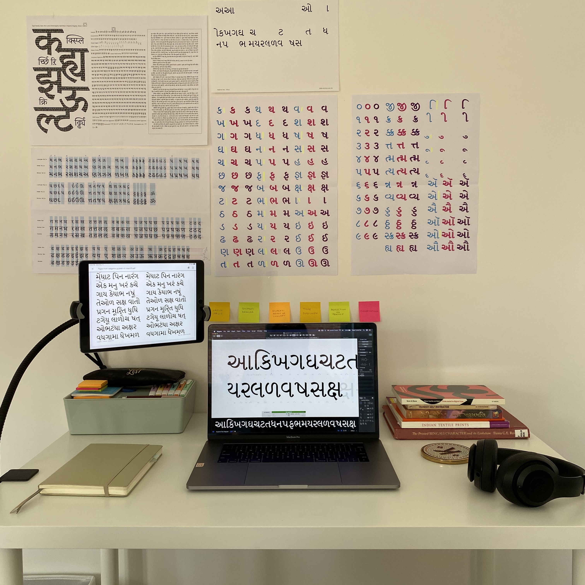
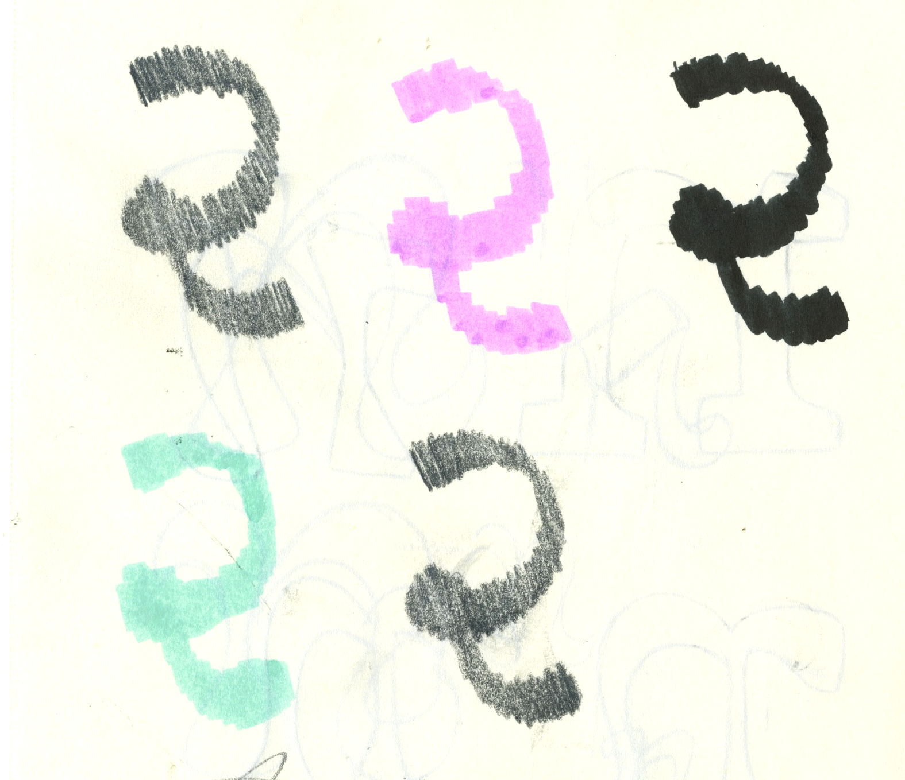
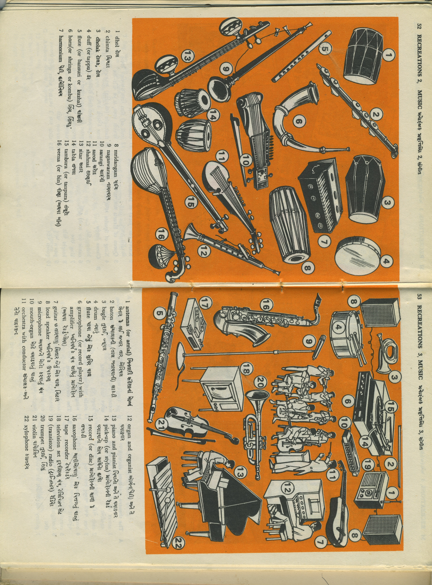
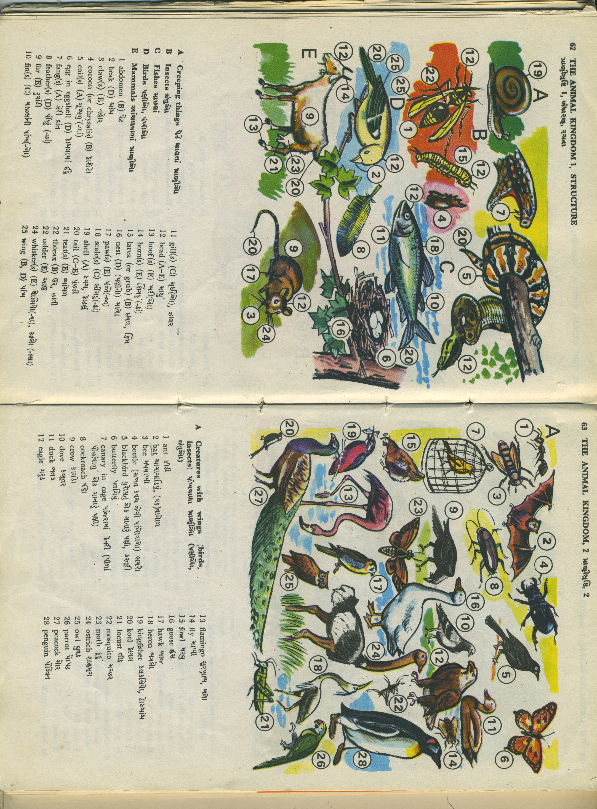
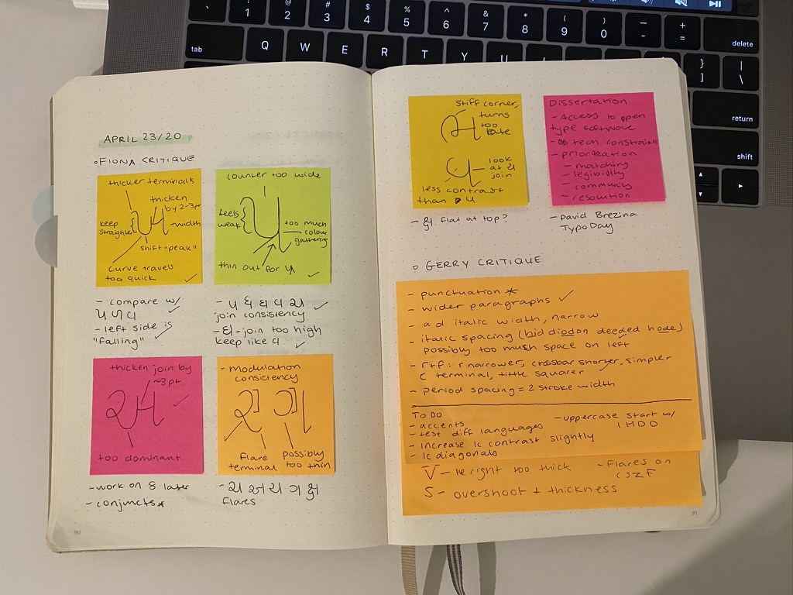
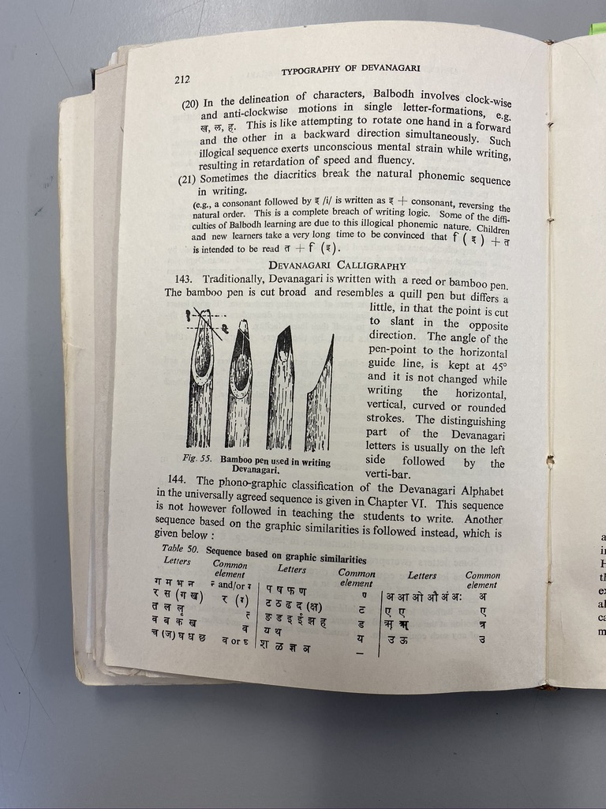
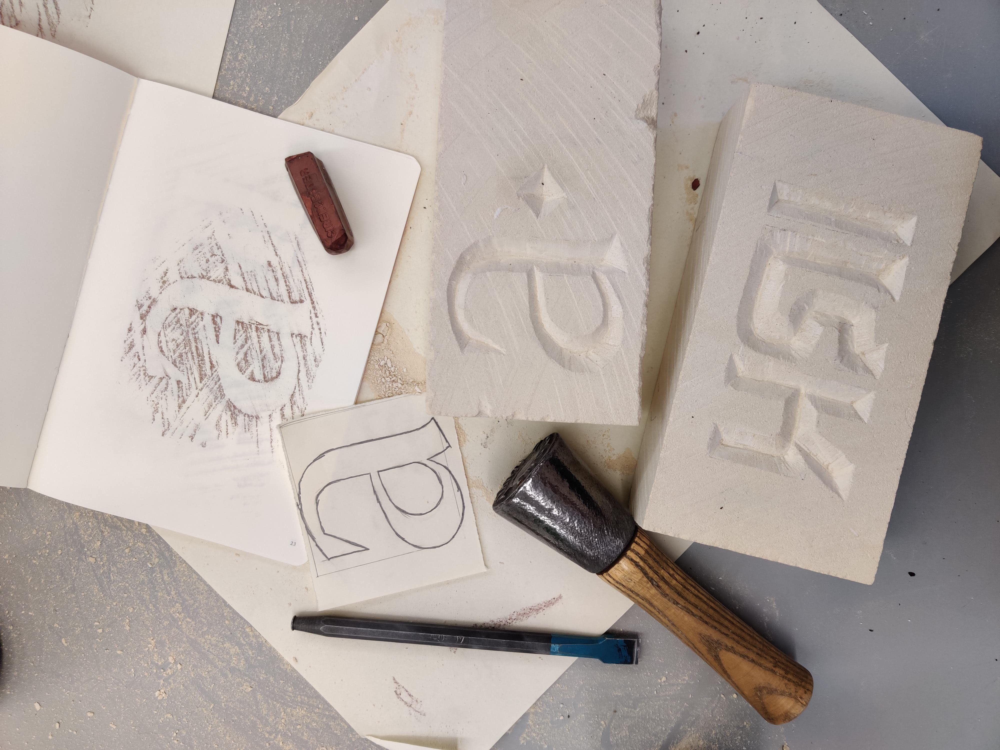
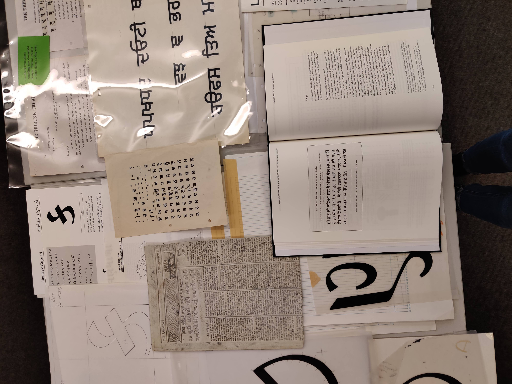
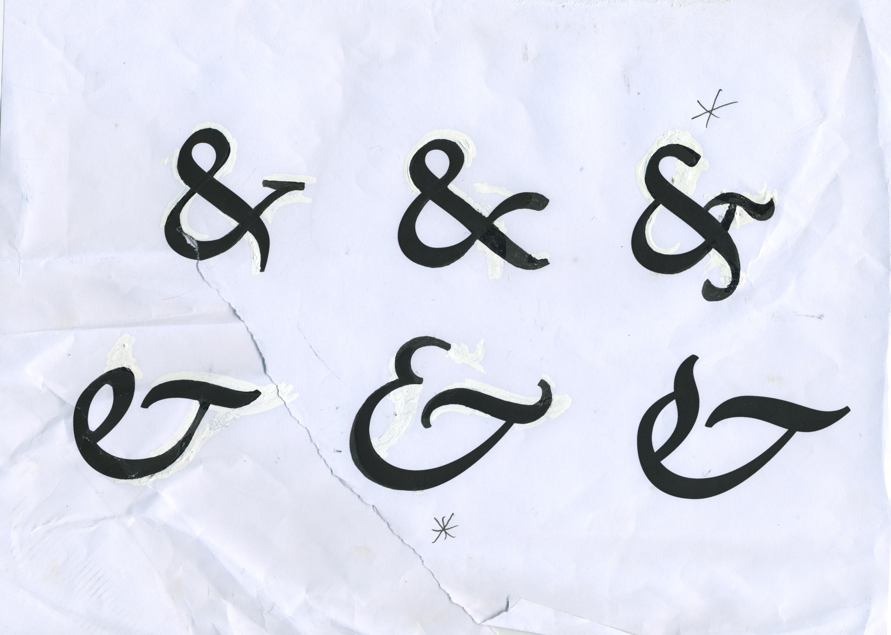

I’d love to talk about your experience and your interest in type design, and then I can show you the roughest of drafts I have going for the website for this interview.
Cool.
I found out about you and your work through Instagram and the Internet. I’ve recently been interested in Gujarati type design. I don’t really know anything about type design, but Gujarati is my family’s language and I’ve been curious about that intersection. I reached out to Tanvi Sharma to ask for advice and names of people, and she suggested that I get in touch with you. Could you start off by telling me about how you got into graphic design, or what led you to become a type designer?
I’ve always been a pretty artistic person. Like since I was a kid. I started doing design, or experimenting with design, when I was in the ninth grade, I think. I had a pirated version of Photoshop, which my dad randomly gave me one day. I had my own computer in my room, and he installed it. I started playing around with it, and literally the reason I wanted to do it was so that I could change the color of my eyes in photos…I was 14 years old, I wanted green eyes. So I was doing stupid shit like that.
I followed all these online tutorials. I learned how to do a bunch of stuff like that, and then in high school I was the person everyone came to to make posters for events. I don’t know if this happened to you when you were in high school, but when it was somebody’s birthday, you decorated the lockers.
Oh yeah! I completely forgot about that. Yeah, we did do that.
Yeah, so I used to design the 8.5 x 11 pages for the lockers of all my friends. I was yearbook editor in grade 12, and that was when I basically figured out, ‘Oh, design is a thing. This is actually a job that people have in the real world.’ Before that I thought I was going to go into journalism. I actually did co-op for journalism and photography.
Oh cool.
That’s where I learned how to do retouching and stuff like that. That was actually super helpful.
Yeah, get those green eyes really perfect.
Ha ha, yeah. I was in my last year of high school when I found a program in Toronto. I don’t know if you’ve ever heard of YSDN? That’s the York Sheridan program. I think actually as of this year, it is done, like it’s not going to be a program anymore, but it was basically a joint program with York University and Sheridan College. It was very hands on, but it was still at the university level. I was super interested in it. It was design-focused, there was no fine arts focus, which I really liked because I’m very bad at fine art skills (I never took art or anything). That’s what led me to that program.
And then I actually really hated typography.
Oh, no way.
It was not my favorite class. I remember the first project we did, I got the size wrong of the project, and I presented it. My prof tore me down, and I cried.
Oh no! That sounds awful.
I was like, I’m over typography, this is not for me. But then in my third year there was a typeface design course, and I was so intrigued by it because it’s so different from typesetting. So I decided to check it out, and I really loved it. A big part of that was the prof that I had. She was very open-minded.
I ended up asking her at the beginning of the semester, instead of designing a Latin font can I do Gujarati instead, because I’m just more interested in that.

And she didn’t—she was white—so she didn’t know anything about Gujarati. But she was very open to letting me explore it. That’s how I started with typography or typeface design and Gujarati specifically.
Had you designed any Latin typefaces before that, or you just went straight into Gujarati?
I mean, I’d done bubble letters—that’s probably as far as I had done. The typeface was awful because I had no resources. I didn’t know where to even start with Gujarati.
And it sounds like your professor wasn’t necessarily the expert in the field on that one.
No. She was great with Latin, but obviously not with Gujarati. I had a weird little process that I came up with. And I found some books, but you know, looking at a book that’s written in Gujarati isn’t super informative if you don’t know how to actually analyze it.
Mm hmm.
That was how I got really interested in pursuing typeface design further because I was like, I know this isn’t great, but I want to learn how to make it better.
Yeah, totally.
I ended up doing an independent study in typeface design in my last year of university, as well.
Oh wow.
That was really cool. It was about the history of, or the development of, the Gujarati script. Again, I was pretty limited with resources. But I still got to learn a lot more.
Totally. Did that culminate in some sort of paper or dissertation?
Not a dissertation. It was, well, an essay essentially. But it was a design-booklet type of thing.
Oh cool! If you don’t mind sharing that, I would love to learn about the development of that script.
I’ll see if I can find it. It was not super comprehensive. I can actually send you a dissertation on the development of the Gujarati script instead, by somebody who did it for their master’s. That one is very good. Mine was just…it almost felt like a high school project now that I think about it.
Both of those classes that I took got me really interested in typeface design. My prof told me about the grad program at Reading. I was really interested in it, and I ended up reaching out to the prof about applying and what my chances were of getting in. He was basically like, um, you have potential, but you need more practice. So I ended up doing Type@Cooper.
Oh, okay, yeah.
I did that in 2017 in preparation for applying to Reading.
Got it. Sounds like it worked.
Yeah, thankfully. This prof basically told me a bunch of things that I could do to get more experience and a better portfolio. And it took me about four years to get everything together that I wanted. That’s how I ended up at Reading.
Wow.
To get the guts to reapply properly this time. And then 2019 is when I did grad school, finished in the end of 2020.
Okay. It’s a one-year program, or…?
Yeah it’s a full—it’s two years condensed, so it’s a full one-year program.
That sounds intense. What did you think of that experience as a whole? Sounds like you were there during part of the pandemic.
I got there six months before the pandemic started. It was really great when it was in person. It was a really small class. I think there were 12 of us to begin with. Very small, very intimate, and I had access to so many things I didn’t have before—it was INSANE.
The program is entirely devoted to type design, right?
Yes.
Wow. That’s really cool.
You are creating a whole typeface with multiple styles, multiple languages, and you’re also writing a dissertation towards the end of the program. It’s very intense because it’s a lot to do in such a short amount of time. But there’s a ton of workshops and lectures and special guests that we got to experience, which was really nice. Even through the pandemic and the switch to learning online…it was difficult, but we did the best we could, with what we had, and it worked out.
Yeah, made the best of it.
Yeah, yeah, it’s a good—it was a good—I don’t regret going. Had fun, even.

That’s amazing. I’m curious also about—and I ask this as someone trying to figure out how to think about this—what your relationship to the Gujarati language is, and how it has changed as you dove into it through type design?
I’m Gujarati as well, and I grew up speaking Gujarati mostly to my grandparents. Very basic. I was in Gujarati school from a young age, and I learned how to read and write.
Oh, that’s amazing. And this was in Canada, or…?
Yeah. It was just Friday nights and then, when I was in high school, it was Saturday mornings. I only did it up until the 10th grade, I think.
Still, that sounds like a number of years.
Yeah, I did it for quite a long time, which makes it surprising that I’m not more fluent in Gujarati, ha ha. It was always something that was around in some shape or form in my life. Part of the reason I also wanted to do typeface design and specifically focus on Gujarati was so I felt like I had more of a connection to my culture and the Indian—my Indian background—because I have always felt a little…not embarrassed but—
Yes.
You know, I’m Indian. I feel like I should be able to speak Gujarati more, or be more fluent with it. This is my way of connecting, I don’t know, with that side of me. If I can’t be super fluent in speaking Gujarati then I can at least design it, and I can learn how to read it better.
‘At least’ being the understatement of the year there. It’s such a big thing to be able to design that script.
It was something that I found I was good at, and that I enjoyed, so I was like, ‘Okay, I can’t speak it super well, but at least I can design it kind of well.’
Sure, yeah.
But it’s nice. Now, I can definitely read a lot quicker than I was able to before. I can even read Hindi because they’re so similar.
It made me want to even watch Gujarati movies, which I never had an interest in before, but I was like, I wanna watch a Gujarati movie, and keep the subtitles on just so I can see if I can keep up with it. That kind of thing.
Wow. I can’t express to you right now how much I empathize with everything you just said, of not being very fluent in Gujarati but it’s all around me at home, and just all of it. Truly all of it. And then last semester, when I first—I forget how much I described to you what I was working on, but, basically, I was typesetting an essay by Gandhi in Gujarati.
Oh, okay.
I also did—nowhere near as much schooling as you—but a very little bit through the local mandir, and, um, I’m not very good at reading, but just doing that typesetting and trying to figure out what the letters were, I feel like I’m a little bit better at reading, and it’s just so exciting—it feels like a deep connection with a past that I don’t really know anything about in terms of my parents, and it’s sort of—it’s so gratifying.
I’m curious also how important you think it is to have, not even fluency in written language, but how important is a familiarity with it when you’re working as a type designer in the script? Did you feel comfortable designing Gujarati right out of the gate, or did you feel some hesitancy?
Because I was familiar with it, I felt very comfortable with it in a way that, at least once I got to grad school, my classmates who were designing maybe Hindi or Arabic for the first time didn’t. They were not native speakers of that language. It is very helpful because there’s small things about the language and the orthography that you inherently know if you’ve learned even a little bit of it.
Right.
You know, just things like the vowels and the placements that make sense to me because I’ve grown up with it. I know that the ઈ can go on either side of the letter. And I know the difference between the two, and why there are two ઈ characters. So, being comfortable with it, and knowing it, I did find that to be an advantage.
This is also a pretty common topic in the type design industry, in general. Should designers be designing for languages that they have no connection to? It’s kind of a spicy topic. People have very strong opinions about it because it’s hard to find native designers for every single language.
There are white designers who have made their entire career off of designing Hindi or Devanagari, right?
Right.
Two summers ago when everything happened with George Floyd, and all these racial conversations started happening, it was a really big issue. People were asking who should be designing typefaces for these languages?
I don’t know if I have a stance on it, a very strong stance on it, but it definitely does help, when designing at least, if you’re familiar.
Yeah. You have an insight into how this thing functions on a very vernacular level, I guess.
Yeah.
Which can be really helpful. Do you think that conversation has kept up in type design in the last two years?
It has a little bit, but I do think it’s died down the same way the other conversations that we were having around race at that time have died down. Which I find crazy. It sucks, but it’s not a thing that people are focusing on anymore.
Mm hmm.
From what I can see, there are more initiatives at least to get type design education in these more remote places. In Southeast Asia, for example, that was a big area where it was just white designers for the longest time, designing Thai or Burmese or whatever. And now there is some type design education happening in those areas.
Small steps, I guess.
When I was getting into this whole subject area, I felt like you had a lot of references on Instagram of things you’re looking at. I remember one post in particular was about a sari pattern. A picture of the fabric you posted. And I was like, oh my God, of course this is also design. I’m curious to hear where you look for inspiration, and not only in designing typefaces, but design at large. Inspiration and reference points.
Recently for type stuff I like to go to Letterform Archive. They have an online archive now which I find myself going to a lot if I want to browse type-related stuff. They have a really big catalog. For more of the Indian stuff, and the Gujarati, I have a lot of books of my own. Books that were passed down. Some of the sari stuff that you mentioned, those are just my mom’s saris that I decided one day to take pictures of. I had a feeling I might reference these, in the future, for something.
 The last Instagram post was literally a picture I took of water drying on the ground.
Oh, that almost looks like a painting.
Yeah! I love the way that the water was making a gradient. It caught my eye. I end up taking a lot of random pictures out in the world because I think I may want to use this in something way down the line, who knows. I do try to reference from my environment.
It feels like a bit of a cheat code or whatever, but referencing mid-century designers—they’re so good. You can’t go wrong when you’re referencing them, right?
I also really like to reference textiles and ornamental architecture. Specifically floral inlays and stuff. I love that. It’s so prevalent in Indian architecture, too.
Oh, that’s so interesting, yeah.
I have a book, I can send you the name of it, or send you a picture of, um—
I’d love that.
I reference that so much. I got it when I was at Type@Cooper. I went to the Met by myself one day and I found this book on Indian ornamental patterns—it was crazy! It was so cool.

That sounds lovely. It’s really, really nice—as I’m just starting to get serious about my design education it’s become clear that to cultivate some sort of base of where you look, particularly if you’re stuck or something, is so critical. I just feel like it’s a glaring hole in my life, and it’s so lovely of you to share where you look.
One of my last questions is: Do you—and I ask this in a very personal way—do you have advice for someone who is just getting into type design, has never really designed typefaces, and wants to design a Gujarati typeface? Ha ha. I feel very bewildered because it’s such a huge world and I don’t even know the fundamentals of Latin type design, which is my first language. Any advice about how to get started…
Yes, definitely! The first question I have, though, is are you also designing a companion Latin typeface, or just pure Gujarati?
That’s a good question. Well, I haven’t really embarked on a project yet, and I won’t formally do it until next year, in the second year of my program, and that will be a Latin typeface. It’s gonna have to be. But, I just want to get a jumpstart and I don’t have a clue how.
For the Latin stuff, I can totally send you some resources. There’s one book in particular that I used to use. I don’t think I mentioned this: I also taught typeface design at my university. I ended up teaching part-time typography and typeface design. So I did my undergrad and I took typeface design, and then a couple years later I ended up coming back to teach in the same program.
Oh wow, very cool.
I taught typeface design, so I can send you a bunch of resources from that time. There’s one book in particular that I recommend heavily for first-time Latin typeface design.
Amazing.
So I’ll send that to you.
Oh, thank you! That sounds like exactly what I need.
And then for Gujarati type design, um, I think the first thing you have to think about is, are you designing for display or are you designing for text? Display being a more ornamental or fun typeface.
Mm hmm.
And text being something that you would want to read large passages of text in. So that’s the first thing. If you’re doing display, there are so many things you can reference. I like to reference, for display design for Gujarati, book covers, the mid-century book covers! They’re crazy, they’re so good, they’re—
Gujarati book covers?
Yeah—
Where do you find these??
There’s a Flickr album that this typeface designer uploaded with a bunch of Gujarati book covers, but then she—
No way!!
—also has a ton of other languages. She has Devanagari, Gurmukhi, Tamil, Telugu, all of this stuff, it’s pretty crazy. I can send you a link to that.
Oh, that would be awesome.
I would recommend starting with text because the base of that is Gujarati calligraphy, and Gujarati writing.
Mm hmm.
When you know how to do Gujarati calligraphy, even the basic strokes that you would need and the angle at which the pen should be, that gives you such a good basis for the skeletons of the letters that you’re going to design. Gujarati calligraphy was done with a reed pen.
I didn’t know that.
They were done with a reed pen that have that angle, right?
So it’s fat at moments, and then really thin in other moments?
Yeah. Do you know what the Pilot Parallel pens are?
Yeah, they’re super flat, thick and flat, right?
Yeah. So Pilot Parallel pens are really good as well. I actually like to use highlighters.
Oh! Ha ha.
Because they are cut at the perfect angle, there’s that chisel tip—
Yeah.
That is a good angle, and then I hold it like a pen, like where the correct angle should be, and then I draw on paper using that because it’s such an easy way to experiment, and it’s low pressure.
Right, yeah.
It’s just a highlighter. You’re not using pen and ink. On Instagram I have a little guide for—
Oh no way.
—Gujarati, for starting with—let me find it.
Yes.
So it’s the—I’ll just send it to you.
This two-pencil method is actually something that I use a lot. Literally taping together two pencils because you can create whichever angle you need.
Oh wow this is so—um, lo-fi. Also, very cute guide.
Yeah, ha ha. So I think the last, or one of the last—
This is awesome.
Yeah, so in the third slide, the third square, the 36 degrees. You’re holding your pen as if you were to line up the two ends of your pencil tips with that angle. That’s how you would want to keep the pencils, or whatever writing utensil you’re using.
Yeah.
And that’s essentially the starting point for writing in the Gujarati script.
A big mistake that a lot of people make when they try to learn Gujarati calligraphy, or calligraphy in other languages that don’t follow what Latin does, is they use the Latin angle, which is essentially the exact opposite of what you need for Gujarati. So then your thicks and thins are in the wrong place.
Oh wow.
It ends up looking like very weird, like a Romanized or Latinized version of Gujarati that isn’t super true to how it works.
So interesting. How important do you think it is to be good at drawing or calligraphy? I’m not very skilled at either.
It’s not super important. If you understand how the letters work, understanding the structure and the way the letters should be formed is more important than being able to draw it perfectly. You can always go back in with your pencil after and fix it, erase what didn’t work or, if you’re working digitally, you can very easily fix those things. It’s more about, ‘Okay, I got the general placement of the thicks and thins in the right spots.’
I’m not an artist.
Ha ha, sounds familiar.
So if you can become familiar with that…I know it’s so difficult to explain over video, it’s so much easier to show you.
Yeah, but even this diagram on this post is so helpful.
Yeah, I’ll send you whatever I can, for the calligraphy stuff. The other thing I would say to do is find a typeface. Even an old one from a book or something that you could just start copying in Glyphs, to get you familiar with how to place points for doing vector drawing for typeface design.
Mm hmm.
And then it’ll also help you to just do a character study of all the different letters that you have to design.
Right.
Yeah, what else?
Yeah, that sounds good. Copying. That sounds a lot less, um, I’m feeling a lot of pressure about like, oh my God, if I start this project it’s going to have to be something worth doing. But you’ve got to learn somehow, basically.
I would start with copying. There’s a core set of characters that you can start with that’ll give you a lot of what you need to design the rest of the letters. Don’t feel like you have to start from ક and then do every single letter.
Okay.
What you can do instead is what we call ‘proof of concept,’ where you would create a sample of maybe 10 to 15 letters. That gives you the DNA of the font. It’s a very easy way to explore different ideas you have, rather than doing a full typeface, and it does show a wider range of skill as well.
That smaller set?
Yeah.
Yeah.
I don’t know if this is applicable to you, but if you want to go to grad school for typeface design, I know a lot of students who want to go into typeface design think they need to have designed a FULL typeface with every single punctuation, every single letter possible. But really it’s better to show range and that you’ve thought about designing many typefaces. One that is for display, one that is for text, one that has a lot of contrast, one that maybe doesn’t. I recommend doing that because you get a lot more exposure to different styles.
You can ‘end’ things a little quicker and move on to the next idea.
It’s more important to do that, rather than like . . . what are you going to do with a fully finished Gujarati typeface? You’re probably not going to sell it if you’re just making it as a learning tool. I can’t tell you how many typefaces I have started that . . . yeah yeah.
Maybe now is a good time to show you what I have going for this site so far. I cannot express how sketchy it is—ha ha. It is bound to change a million times. Please excuse the horrendous typography on this page. An idea I had was—if you’re interested that is—I thought it could be cool to make a very type-heavy little website to showcase a Gujarati typeface you’ve worked on. This is just a random Google font—actually the font is called Shrikhand, which I thought was really fun, super display. And as someone who’s found it hard to find conversation about Gujarati type design, I thought it would be cool to have our entire transcript all in one place.
Those are great ideas. I do have a typeface I can give you. The typeface that I worked on for my master’s—
Is this Mango?!
Ha, yeah. That one is not fully finished, but I have the basic alphabet that you would need.
That sounds awesome! The other thing our earlier conversation reminded me of is if there was a typeface that you want started and didn’t finish, maybe it would be interesting to have an incomplete set of letters on there? But totally your call.
I definitely do. I have a display Gujarati typeface that I started, like as proof of concept for my master’s, so I could share that with you. The letters are very random.
Cool, that could be interesting.
It is kind of nice how ક and Keya just work out at the top of the page, so that’s the only thing I’m like kind of anchored to.
But the name Mango is such a good name for a typeface.
Oh my God, thank you, I thought it was gonna be so cheesy—
No! How did you come up with it?
—what a diaspora-ass name. I justify it because the counters in the Latin are purposely uneven, kind of like a mango.
So you designed a Latin counterpart, as well as the Gujarati. Is that the standard in type design?
Well, it was a requirement in the program.
Oh, okay.
To design a Latin typeface and then the companion font in whatever language or languages, you wanted to design them in.
Generally it’s become more of a thing in the type world now, to be more inclusive with even just your Latin character set. Now it’s becoming more common practice to include diacritics for languages like Vietnamese because that’s a very underserved, or was a very underserved, community for typeface design.
Vietnamese has diacritics that stack. You might have two or three diacritics that are stacked on one letter. People were just very, I don’t know, impatient, maybe is the right word. It’s a lot of work, right? Now the conversation has shifted to being like, ‘You have to put in the work if you want to be inclusive with your work.’ And not just leave out a whole population of people that need to be able to read their language.
I wanted to release Mango Gujarati by itself, but I spoke with somebody in the industry, and he suggested the likelihood of people buying only the Gujarati typeface without the English companion is pretty low. It does make sense from a more logical standpoint. If you’re typesetting something, you would probably want to have the matching Latin because English is THE language of the world.
Do you work totally professionally in type design now, or do you also do other forms of design work?
No, actually. The only time I was working full-time in typeface design is when I was interning right after grad school. I did a six-month internship in typeface design, but after that—I’m a brand designer now for a startup. I do that full-time, but I actually do quite a bit of type design within this, so—
Within that branding project?
Yeah.
Oh cool.
Yeah.
And then I do freelance work as well, so I’ve been able to keep up with doing type design in that way. I have a lot of South Asian clients.
Oh that’s so awesome, yeah.
It’s worked out nicely where I get to have a good balance.
Yeah.
Freelancing full-time as a type designer is quite stressful.
Designing a whole typeface seems like very long-term project.
Yeah, yeah, if you’re doing a full-on typeface, some people take up to 10 years to complete an entire project.
Wow.
You can take really long.
If you’re doing just typeface design the pay honestly is not the best, and if you’re doing it independently, it is a gamble. As much as I wanted to take that gamble, you know, I’ve got bills to pay.
Yup, yup, exactly.
Well, I don’t want to take up too much more of your time and—
It’s cool.
I really, really enjoyed talking to you and I’m definitely going to send you a draft of the site, probably in a week when it’s in a less embarrassing state. You can take a look, and let me know what you think, if you want.
I’m excited. I want it to be an artifact of this call, and also something that you really like and can share. It’ll live on the web.
I’m so honored that you even chose to do this with me.
Of course!
It was really nice talking to you. I will send you everything right now as it’s fresh in my mind.
Thanks so much!
Yeah, take care. It was nice to meet you. Bye—
You too, lovely to meet you. Good night.